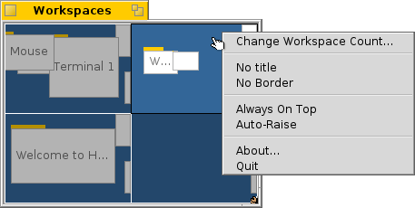

Виртуальные рабочие столы имеют своё собственное разарешение экрана,глубину света и фоновое изображение. До 32 подобных рабоичх столов могут быть установлены в диалоге настроекScreen.
Аплет Workspaces

Вы найдёте аплет Workspaces среди других Desktop Applets в Deskbar. Он изображается в виде миниатюрной версии всех рабочих столов. В контекстном меню присутствует несколько опций окна аплета, названия которых отлично говорят за себя. Т.к. аплет является репликантом, вы можете изменять размер окна как вздумается и затем бросить при помощи handle на рабочий стол (удостоверьтесь, что "Show Replicants" активирован в меню Deskbar).
Переключение между рабочими столами
Вы можете преключаться между рабочими столами либо, кликая на аплете Workspaces, либо, используя клавиатурные ярлыки ALT+Fx, где "x" - это номер рабочего стола. Также, щелчок на приложении или на одно из его окон в Deskbar переместит вас на рабочий стол, на котором оно находится.
Вы можете переключаться назад и впереёд межу двумя рабочими столами при помощи ALT+~ (которая, в зависимости от используемой вами раскладки клаиватуры, находится под клавишей ESC, которую нужно нажать дважды чтобы получить ~).
Перемещение окон между рабочими столами
Для перемещения окна, необходимо его захватить в аплете Workspaces и просто перетащить на другой рабочий стол. У этого способа есть преимущество: вы можете пермещать окна не поикдая текщуего рабочего стола. Разумеется это работает хорошо только когда не особо много окон на рабочем столе и интересующее нас окно не спрятано другими. Другая возможность состоит в захвате заголовка окна и простым удержанием захвата при переключении окон ALT+Fx.